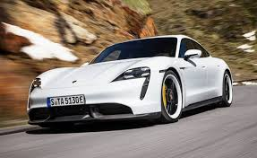

Porsche




Porsche Panamera
es un automóvil de lujo del segmento F, producido por el fabricante alemán de automóviles Porsche. Se trata de un automóvil sedán de cuatro puertas, con diseño de carrocería estilo fastback. Es el primer automóvil de 4 puertas desarrollado y producido por Porsche, a la vez de ser uno de los varios modelos de la casa Porsche con motor delantero, junto a los cupés 924, 944, 968, 928 y el SUV Cayenne. Presenta dos versiones de transmisión, siendo estas de tracción trasera o tracción total.
Porsche 718 cayman
es un automóvil deportivo de lujo de dos asientos con tracción trasera y motor en posición central producido por Porsche AG de Alemania desde el año 2006. Es un cupé derivado del convertible Boxster. A mediados de 2016 el Cayman pasó a denominarse 718 Cayman. Hasta ahora se ha fabricado en tres generaciones: Porsche Cayman (Tipo 987c) (2005-2013) Porsche Cayman (Tipo 981c) (2013-2016) Porsche 718 Cayman (Tipo 982) (desde 2016)
Porsche Taycan
denominado internamente como J1 y como Mission E en su presentación, es un automóvil eléctrico de altas prestaciones desarrollado por la empresa automotriz alemana Porsche, filial del Grupo Volkswagen. Se trata de un automóvil ejecutivo sedán de cuatro puertas y cuatro plazas, dentro de la categoría de automóvil deportivo. El Mission E saldría al mercado antes de 2020